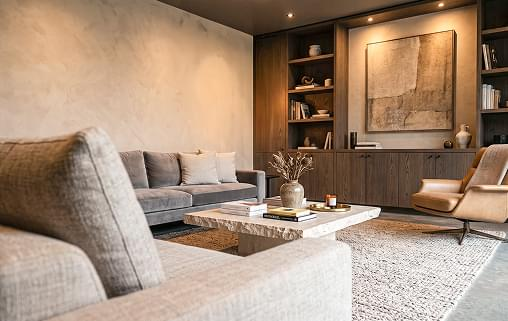
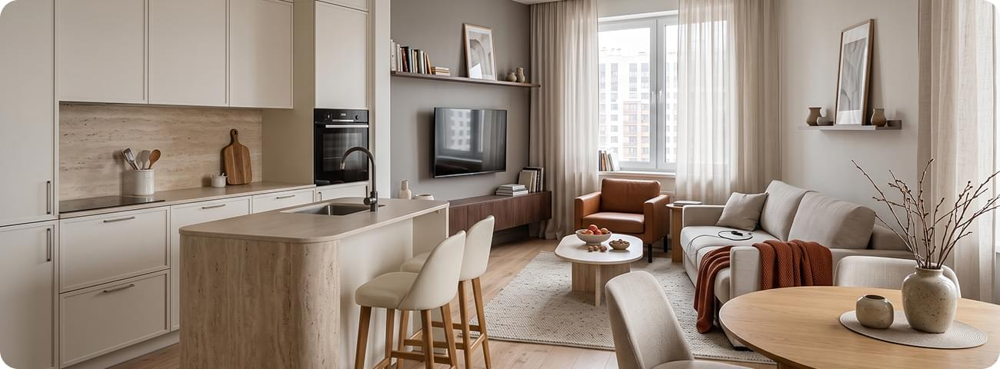

Обладая глубокими этническими корнями, это направление по-разному раскрывается в зависимости от географии. Английскому кантри свойственна утонченная чопорность, американскому — брутальный дух классического ранчо, а средиземноморскому — легкость залитого солнцем прибрежного дома. При всей разнице культур их объединяет отказ от городской суеты и верность традициям.
Дизайнеры воссоздают атмосферу тепла и уюта деревенского дома, соединяя ее с современным комфортом. Кухню, столовую и гостиную часто объединяют в единое, наполненное воздухом пространство. Смысловым и визуальным центром интерьера неизменно становится домашний очаг — традиционная печь или большой камин, вокруг которого выстраивается планировка комнат.
Элементы природы
Один из главных элементов современного романтизма это пастельные и нежные цвета. Особенно популярными были розовый, светло-зеленый и голубой. Такие цвета напоминают о цветах, о нежности и милости. В палитре можно ярко выделить оттенки пудровой розы и сирени, нежные бежевые и голубые тонкости.

Важно помнить, что незначительное использование ярких цветов, к примеру, оранжевый или красный — может быстро справиться в цветах. Комбинация передовых цветов и белого цвета это новая классика. Весь дизайн может быть построен на этой комбинации — сочетание красного и белого, например, в столовой будет отлично смотреться. В интерьере вы может колорировать подушки, ковры и одежда или декор, чтобы сделать этот стиль вызывающим и внушительным.
Обладая глубокими этническими корнями, это направление по-разному раскрывается в зависимости от географии. Английскому кантри свойственна утонченная чопорность, американскому — брутальный дух классического ранчо, а средиземноморскому — легкость залитого солнцем прибрежного дома. При всей разнице культур их объединяет отказ от городской суеты и верность традициям.
Описание проекта
На первой встрече клиенты (пара с подростком) показали нам два ведра. В одном — надежды. В другом — реальность.
Проблем было четыре:
- Кухня-пенал — 5,3 м². Туда физически не влезал холодильник. Обедали на раскладном столике, который перегораживал проход.
- Сквозной проход через гостиную в спальню. Нельзя было лечь спать раньше, чем ребёнок выключит телевизор.
- Кладовка в коридоре бесполезная и кривая, но несущую стену снести нельзя.
- Санузел раздельный — унитаз и ванна в разных углах, стиральную машину поставить было некуда.
Наша задача: не «красиво поклеить обои», а пересобрать логистику без сноса стен.
Этап 1. Замер и диагностика (выезд инженера)
Замерщик провёл на объекте 3 часа. Обнаружил:
- Перепад полов — 8 см.
- Стены в спальне завалены на 6 см по вертикали.
- Трубы холодной воды — сталь 1972 года выпуска (менять обязательно).
Эти три факта легли в основу сметы сразу. Клиент не получил сюрприз «ой, а тут ещё 50 тысяч» через неделю после старта.

Результат цифрами
- До: 49 м² с ощущением 38 м².
- После: те же 49 м², но кажутся 55 м². За счёт правильной геометрии и зонирования.
- Срок: 3 месяца и 6 дней (уложились, неустойка не выплачивалась).
- Бюджет: 1 078 000 рублей (на 22 тыс. ниже запланированного — экономия на материалах за счёт наших скидок)
Что говорит заказчик (из отзыва)
«Мы были готовы к тому, что ремонт сожрёт 4 месяца и все нервы. В итоге пришли через 3 месяца — ключи на столе, паспорт готовности на холодильнике. Единственное „но“ — теперь я не могу выгнать мужа с кухни, он там зависает с ноутбуком и кофе. Спасибо, что предупредили?»
Наша оценка этого проекта
Обычный, в общем-то, ремонт. Никаких архитектурных излишеств. Но он сдан без штрафных санкций, клиент въехал и доволен. А довольный клиент — это когда розетки там, где надо, двери открываются без скрипа, а смета не подскочила на 50%. Это наша работа. Без фейерверков, но с калькулятором и уровнем.
В современном романтизме очень важно использование элементов природы, таких как дерево, камень, металл и даже вода. Все эти материалы очень естественны и напоминают о естественных красотах нашей планеты. Основная идея заключается в том, чтобы использовать их в качестве декора и добавить больше текстурности в дизайн комнаты. Важно помнить, что дерево и камень не слишком претенциозны, они больше добавляют солнечного тепла и приятного переживания в пространство. К излюбленным растениям в этом стиле относятся монстера, папоротник, суккуленты. Также можно расставить свечи и фонарики, чтобы создать уютную, мягкую и романтическую атмосферу.
Один из главных элементов современного романтизма это пастельные и нежные цвета. Особенно популярными были розовый, светло-зеленый и голубой. Такие цвета напоминают о цветах, о нежности и милости. В палитре можно ярко выделить оттенки пудровой розы и сирени, нежные бежевые и голубые тонкости. Важно помнить, что незначительное использование ярких цветов, к примеру, оранжевый или красный — может быстро справиться в цветах. Комбинация передовых цветов и белого цвета это новая классика. Весь дизайн может быть построен на этой комбинации — сочетание красного и белого, например, в столовой будет отлично смотреться. В интерьере вы может колорировать подушки, ковры и одежда или декор, чтобы сделать этот стиль вызывающим и внушительным.
«Выставка — это как разведка боем. 80% новинок отсеивается ещё на входе, потому что не соответствуют нашему стандарту „фиксированная смета“. Но 20%, которые проходят, позволяют нам предлагать клиентам решения, которых не было у конкурентов ещё полгода назад».
Пример дизайн-проектов квартир
Обладая глубокими этническими корнями, это направление по-разному раскрывается в зависимости от географии.
Английскому кантри свойственна утонченная чопорность, американскому — брутальный дух классического ранчо, а средиземноморскому — легкость залитого солнцем прибрежного дома. При всей разнице культур их объединяет отказ от городской суеты и верность традициям.